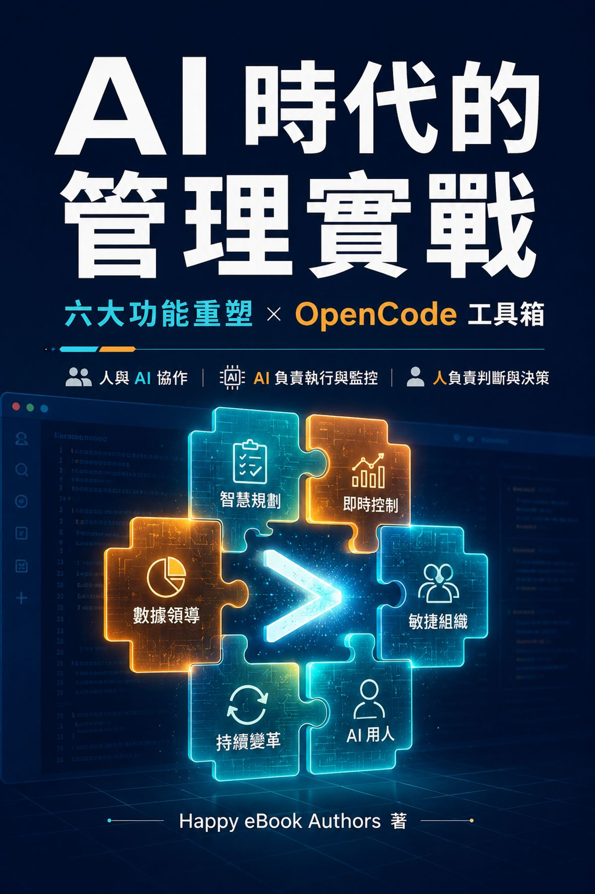

電子書
AI 時代的管理實戰：六大功能重塑 × OpenCode 工具箱
AI 改變的不只是工具，而是整個管理方式

AI 時代的管理實戰：六大功能重塑 × OpenCode 工具箱
AI 改變的不只是工具，而是整個管理方式
AI 改變的不只是工具，而是整個管理方式。 本書把管理大師法約爾（Fayol）的六大管理功能——規劃、組織、用人、領導、控制、變革——逐一用 AI 重塑，並以三個規模不同的真實案例串成全書： - 阿志：一人開發者，用 AI 建立自己的「一人管理團隊」 - 晨星：五人新創，把 AI 變成虛擬團隊成員 - 順達：三百人製造廠，用 AI 盤點技能、推動持續變革 每一章都是「案例串場 → 傳統痛點 → AI 如何重塑 → 用 OpenCode 直接動手做 → 管理啟示」的完整閉環。全書含 12 張流程圖、可直接複製的指令與設定檔範例，並附 30/60/90 天導入路線圖，讓讀者看完就能落地。 特別適合： - 想用 AI 提升效率的經理人 - 一人公司或小團隊創業者 - 負責 AI 導入專案的專案經理